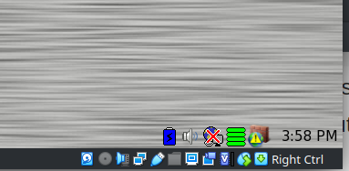

Preliminaries
- Setup VM running Puppy Linux
- Build Linux Kernel within the VM
Setting up VM
- We recommend using VirtualBox as we have tested it both on Linux and Windows host machines. However you're free to use other virtualization software as well but your mileage may vary.
- Download the VirtualBox software from their website and follow the installation instructions for your host OS.
- Download the Puppy Linux VM image.
- Open up the VirtualBox, and from its main menu click the option to create the new VM. Pick the name you want for your VM and make sure to mark the type as Linux and version as Linux 2.6 (32-bit).
-
Next, specify the memory (RAM) size for your VM. The more memory (RAM) VM has the better it will perform, however make sure not to hog all the RAM away from your host machine.
-
For hard disk, choose the 'Use the existing virtual hard disk file' and choose the Puppy Linux VM image you downloaded in step 2.

- Click 'Create' to finish the process.
- Once the VM has been created, right-click on it and go to settings. Within settings go to 'Network' and make sure adapter 1 is set to NAT.
- Once you are done with network settings you can finally start the VM.
- When the systems successfully boots up, look at the bottom right corner for networking settings which should be marked by red X, click on it.
 - Once in the networking wizzard click on eth0 button to access interface configuration for that interface.
- Once inside the eth0 configuration screen, first click on 'Test eth0' to make sure it can reach connection, afterwards click on 'Auto DHCP' to configure the interface settings.
- You should now be connected to the outside world, open up the terminal within Puppy VM and try running 'ping google.com' to make sure you are connected.
- If you're connected to the internet, your VM should be all good to go. Congrats!
Kernel Building
- The goal of this part of the lab will be for you to obtain, build and install Linux kernel from source. (Within the VM environment)
- Under the lab schedule page you will find useful additional referneces for virtualbox, consult them.
- Open the terminal within Puppy Linux and run 'uname -a' command. Write down the output somewhere, it will become useful later.
- Open up the web browser within Puppy Linux and navigate to our lab schedule page.
- There you will see a link to download the Linux kernel version 2.6.33.3.
- Once you've downloaded it, you should have linux-2.6.33.3.tar.gz file on your Puppy machine.
- Untar the file by running tar -xzvf linux-2.6.33.3.tar.gz, once that is done enter the linux-2.6.33.3 directory.
- And from here you start configuring and building the kernel!
- Build the kernel (Overview):
- Create and configure the .config file.
- Compile the kernel.
- Compile the modules.
- Install the modules.
- Install the kernel.
- Reboot.
- Run 'uname -a' command again. Any difference?
Author: Anton Njavro. Editor: Timothy Borunov